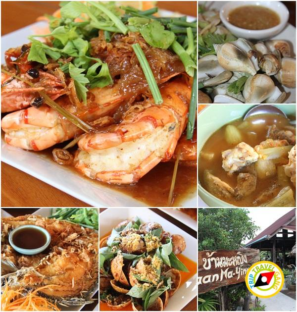

6.ร้านอาหารปูดำ อำเภอเมืองกระบี่่ี่่

ที่ตั้ง: ตรงข้ามลานอนุสาวรีย์ปูดำ ถนนอุตรกิจ อำเภอเมือง จังหวัดกระบี่
เปิดปิดเวลา: ทุกวัน 17.30-24.00 น.
โทร. 08 1700 6590, 08 1676 6867, 08 1535 1524
มาถึงกระบี่ทั้งที ถ้าพลาดชิมอาหารทะเลสดๆ และอาหารปักษ์ใต้รถสชาติจัดจ้านคงเสียดายร้านนี้เขาจัดเต็มทั้งปู กุ้ง กั๊ง หมึก หอย และปลาทะเลนานาชนิด ต้มยำทำแกงกันแบบถึงเครื่องตามตำรับอาหารใต้ รวมถึงปิ้งย่างกินคู่กับน้ำจิ้มซีฟู้ดแซบๆ ด้วยส่วนจานเด็ดประจำร้าน ต้องยกให้แกงส้มปลากะพง เผ็ดเปรี้ยวจี๊ดจ๊าดสะใจ หมึกผัดไข่เค็ม ต้มยำซีฟู้ด ยำรวมมิตรทะเล ปลากระบอกทอดขมิ้นใบเหลียงผัดไข่ ฯลฯ ร้านนี้คนเยอะมาก ถ้าอยากชิมต้องรีบมาไวหน่อย จะได้ไม่รอนาน